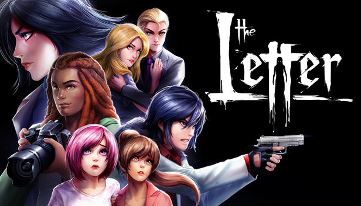
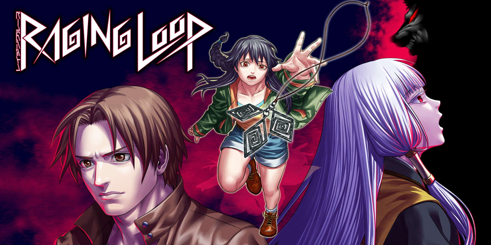
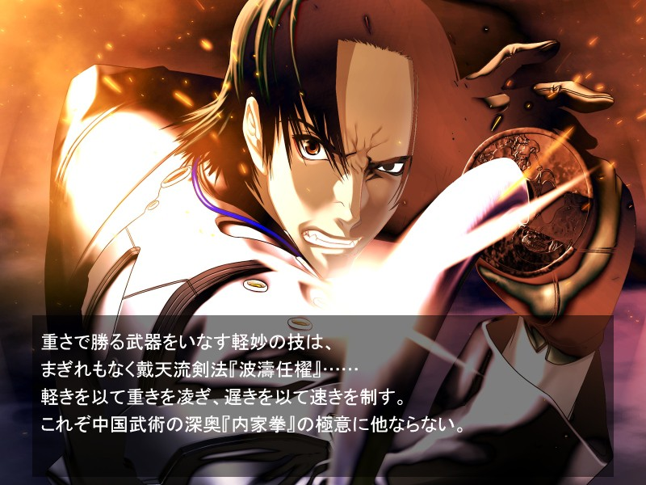
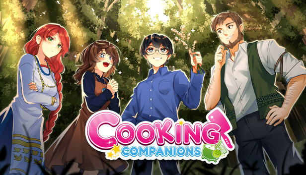
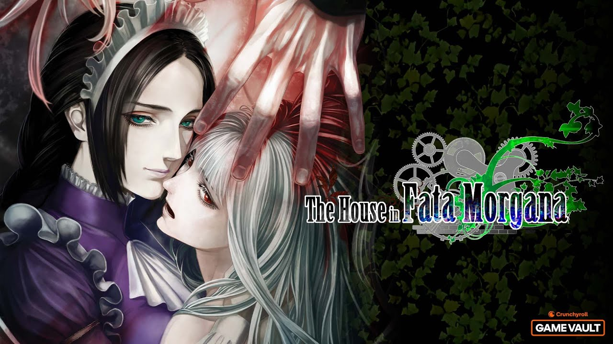

Сайт-проект об индустрии Визуальных Новелл
В этом разделе собран эксклюзивный топ из пяти потрясающих визуальных новелл. О них практически не говорят крупные игровые издания, но их сюжеты, атмосфера и смелые геймплейные решения способны поразить даже самого искушенного читателя.
Жанр: Психологический хоррор, драма
Монументальный и очень качественный ужастик от независимой студии, вдохновленный японскими фильмами «Звонок» и «Проклятие». Сюжет рассказывает о семерых персонажах, которые натыкаются на проклятое письмо в заброшенном особняке. Игра предлагает безумную нелинейность: здесь нет понятия «правильного выбора», любое решение может привести к жестокой гибели кого-то из героев, а повествование полностью перестраивается в зависимости от того, кто выжил.

Жанр: Мистический детектив, психологический триллер
Представьте культовую психологическую игру «Мафия», но превращенную в мрачный сюжет с временной петлей. Главный герой Харуаки попадает в изолированную японскую горную деревушку, окутанную зловещим туманом. По древней традиции жители обязаны провести кровавый ритуал, вычисляя «волков» среди своих. Новелла заставляет мозг работать на полную мощность: вам вместе с героем придется распутывать сложные логические и мистические загадки и использовать знания из прошлых петлей.

Жанр: Кинетический киберпанк-боевик, драма
Мрачный и жестокий шедевр от Гэна Уробути — сценариста легендарной «Saya no Uta». Действие происходит в неоновом Шанхае будущего, где кибертехнологии позволяют переносить человеческие души в искусственные тела. Это история яростной мести мастера боевых искусств, чью сестру растерзали корпорации. Новелла лишена привычной романтики и наполнена густой атмосферой гонконгских боевиков и тяжелыми философскими вопросами о природе человеческой души.

Жанр: Психологический хоррор, фольклор
Игра, которая искусно маскируется под милый симулятор кулинарии с говорящими овощами, но на самом деле является одним из самых жутких хорроров последних лет. Группа подростков оказывается заперта в избушке посреди глухого леса во время наводнения. Еда заканчивается, и милые ожившие ингредиенты начинают медленно сводить героев с ума, подталкивая к кошмарным вещам. Игра глубоко использует мрачный восточноевропейский фольклор и ломает четвертую стену.

Жанр: Готическая драма, мистика, traгедия
Об этой игре знают лишь заядлые фанаты жанра, но те, кто прошел её, называют её лучшим сюжетом в истории. Вы просыпаетесь душой без памяти в проклятом старинном особняке. Вместе с таинственной Служанкой вы совершаете путешествие сквозь разные эпохи (от Средневековья до XIX века), наблюдая за трагическими судьбами прошлых жильцов дома. Это невероятно сильная, взрослая драма о человеческой жестокости, прощении, любви и предрассудках.
